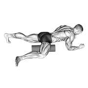
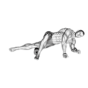
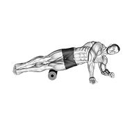
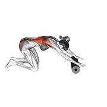
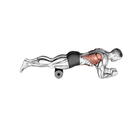
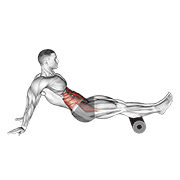

泡沫轴使用指南
一句话结论：泡沫轴放松的规矩只有三条——慢、准、不过界。每个部位来回滚 30-60 秒（速度约每秒 2-3 厘米），训练后或睡前做，每周 3-5 次、每次总共 ≤15 分钟；痛感控制在 10 分制的 5-6 分，也就是"能正常呼吸、能说话"的酸胀。滚完 2 小时更痛，就是压过头了，第二天只做轻滚或改用软轴。
什么是泡沫轴放松？泡沫轴放松（Foam Rolling）是一种自我筋膜放松技术，通过压力缓解肌肉紧张和粘连，提高肌肉弹性和关节活动度。
分层处方：基础版 / 进阶版 / 精英版
先认两个词。筋膜白话就是包在肌肉外面那层"保鲜膜"，它太紧会限制关节活动。激痛点是肌肉里一个按下去会酸胀、还会往别处串痛的小结节。放松时长不是越久越好：同一个点压过 90 秒，身体会开始保护性紧张，反而更紧。三档的差别在"滚多慢、按多深、按几次"。
基础版 零基础 / 每周 2-3 次
- 每部位时长：小腿、大腿前侧、臀部各 30 秒/侧；总共 5-8 分钟收工。
- 滚动速度：每秒约 3 厘米，一个来回数 5 秒——数得出来才算慢。
- 次数/频率：每个部位来回滚 6-8 次，每周 3 次，排在训练后 30 分钟内或睡前 1 小时。
- 动作/剂量：每个部位 30 秒/侧 × 2 轮，1 轮就是来回 6-8 次，速度约 3 厘米/秒；先滚大腿和臀部，最后滚小腿。
- 强度：压力 4-5/10（靠体重压，不用手臂硬按），疼痛 ≤5/10，遇痛点停留 20-30 秒后慢慢滚开，全程不憋气。
- 恢复：同一部位两次滚压间隔 ≥24 小时，排在大强度训练后 30-60 分钟内或睡前 1 小时；第二天还酸就只轻滚 1 轮。
- 疼痛阈值：痛感 4-5 分（10 分制），呼吸不断、能正常说话；只滚肌肉肚子，不滚骨头和关节。
- 替代方案：没有泡沫轴就用装满水的 500 ml 矿泉水瓶，或用网球抵墙滚小腿 30 秒/侧。
- 单次时长上限：10 分钟，只滚当天最累的 2-3 个部位；滚太久第二天的酸痛会让你不想再滚。
- 进阶触发：连续 2 周，滚的时候不再需要憋气忍受，且训练后第二天小腿无紧绷感 → 升进阶版。
进阶版 每周打球 3-4 次
- 每部位时长：小腿、大腿外侧、臀部各 60 秒/侧；背部 45-60 秒；前臂 30-45 秒/侧；总共 8-12 分钟。
- 滚动速度：每秒 2-3 厘米，正常速度滚 8-10 次后，停在同一酸点上做 20-30 秒的静止施压（白话：压住不动，等它自己松开）。
- 次数/频率：每周 4-5 次，训练后必滚小腿与臀部，其余部位每 2 天一次。
- 动作/剂量：每个部位 60 秒/侧 × 2 轮，每轮正常滚 8-10 次，速度 2-3 厘米/秒；酸点上再静止施压 20-30 秒，然后慢慢滚开。
- 强度：压力 5-6/10，疼痛 ≤6/10；超过 7 分立刻卸掉一半体重，以"滚动后 30 秒内酸感明显下降"为有效信号。
- 恢复：同一部位两次滚压间隔 ≥24 小时，安排在大强度训练后 30-60 分钟内做；同一天同一个部位只做 1 次深压，滚完不再叠加筋膜枪。
- 疼痛阈值：痛感 5-6 分，是"酸胀但能放松呼吸"的级别；超过 7 分立刻把体重卸掉一半。
- 替代方案：大腿外侧敏感者改用软密度轴或筋膜球；小腿改用筋膜球 30 秒/侧，肩背改用长曲棍球靠墙做。
- 单次时长上限：15 分钟；同一天不做两次以上，训练前只做 ≤3 分钟的轻滚。
- 进阶触发：连续 2 周，坐位体前屈增加 ≥2 厘米、髋关节活动幅度左右差 <10 度，且滚完 2 小时内无疼痛加重 → 升精英版。
精英版 每周 ≥5 次 / 有团队
- 每部位时长：主要部位 60-90 秒/侧，次要部位 30-45 秒；单次总时长 15-20 分钟封顶。
- 滚动速度：每秒 1-2 厘米的慢速滚 3 分钟一段，或每部位静止施压 30-45 秒 × 2 轮，中间隔 15 秒。
- 次数/频率：每天 1 次，训练后与睡前各一次时每次 ≤10 分钟；比赛期只保留小腿与臀部两项，各 60 秒/侧。
- 疼痛阈值：痛感 5-7 分封顶；以"滚动后 30 秒内酸痛明显下降"为有效信号，没下降就停，不加压。
- 强度：压力 6-7/10，疼痛 ≤7/10；痛感到 8 分立刻停，同一痛点最多连压 2 轮，滚动后酸痛不降就不再加压。
- 替代方案：赛前 24 小时内不做深压，改 3 分钟轻滚或动态热身；恢复日用气压裤 15 分钟、筋膜枪 30 秒/部位或水下按摩替代。
- 单次时长上限：20 分钟；急性损伤 48 小时内、同一部位连续 3 天疼痛时完全停用。
- 进阶触发：晨起静息心率回到基线、训练后 24 小时酸痛明显减轻、且按压时疼痛评分下降 ≥2 分 → 才允许加时长或加压力。
三档通用的一条：泡沫轴是"把紧张降下来"的工具，不是治疗手段。滚完当天活动度变好，说明用对了；滚了 2 周一点没变，问题多半在力量与控制（该练臀中肌和核心），继续加压力只会压出淤青。
💡 使用原则
🦵 下肢放松
🦵 下肢放松动图
前后缓慢滚动，遇到明显痛点停 20–30 秒，呼吸放松；每部位 1–2 分钟。


💪 上肢放松
💪 上肢放松动图
侧躺滚动背阔肌与胸椎，避免压到腰椎；肩前侧疼痛者减小压力。


🎯 羽毛球专项放松
羽毛球运动员重点关注：小腿（步法）、大腿外侧（急停急转）、臀部（发力）、前臂（握拍）、背部（挥拍）
| 部位 | 为什么重要 | 频率 |
|---|---|---|
| 小腿 | 羽毛球步法频繁使用 | 每天 |
| 大腿外侧 | 急停急转容易紧张 | 训练后 |
| 臀部 | 发力肌群，需要放松 | 每天 |
| 前臂 | 握拍导致前臂紧张 | 训练后 |
| 背部 | 挥拍导致背部紧张 | 训练后 |
注意事项：
• 急性损伤48小时内不要使用泡沫轴
• 不要在骨头上滚动
• 不要在疼痛部位过度用力
• 如果感到剧痛，立即停止
自测与进阶标准
每 2 周测一次，固定在同一时间段、训练后 24 小时的状态下测，别在刚打完三局的时候测。达标再升档；任何一项不达标就按右列退阶，泡沫轴这件事宁少勿多。
| 测试动作 | 通过标准（数字） | 不达标时的退阶 |
|---|---|---|
| 小腿围度差（放松前后） | 滚完小腿最粗处围度减少 ≥0.3 厘米，或紧绷感评分下降 ≥2 分（10 分制） | 改为靠墙静止施压 30 秒/侧 × 2 轮；仍无变化就用筋膜球轻滚 30 秒/侧，并每天加小腿拉伸 30 秒 × 2 轮 |
| 坐位体前屈 | 滚完大腿后侧与臀部 60 秒/侧后，前屈距离增加 ≥2 厘米 | 改成滚完立刻做静态拉伸（每部位 30 秒 × 2 轮），不追求滚的时长；柔韧性两周无变化就查髋屈肌与腘绳肌力量 |
| 痛点按压评分 | 同一痛点静止施压 30 秒后，疼痛评分从 6 分降到 4 分以下 | 把压力换成软密度轴，或只做每秒 3 厘米的轻滚 30 秒；评分 ≥8 分时停用该部位并安排筛查 |
| 胸椎伸展活动度 | 泡沫轴垫胸椎做伸展 10 次，肩能贴到地面、腰部不代偿 | 改用毛巾卷（直径 10 厘米）垫在下胸椎做 10 次；避免垫到腰椎，腰有旧伤者跳过本项目 |
| 滚后 2 小时反应 | 滚完 2 小时内疼痛不加重，第二天无新增淤青（淤青直径 <2 厘米） | 时长砍半、压力减半，间隔改成隔天一次；出现直径 ≥2 厘米淤青则停用该部位 3 天，只做拉伸 |
| 前臂握拍后紧张度 | 比赛后滚前臂 30 秒/侧，第 2 天握拍时前臂无酸胀 | 改成筋膜球轻压 20 秒/侧 + 前臂伸肌拉伸 20 秒 × 2 轮；连续 3 天酸胀不消要排查网球肘 |
| 训练后恢复感 | 训练后 24 小时酸痛评分比不滚的日子低 ≥2 分 | 只保留小腿与臀部两项各 30 秒/侧；酸痛超过 72 小时说明训练量本身过大，先减量 20% 再谈放松 |
错误 → 原因 → 纠正
泡沫轴的错误几乎全在"力度"和"位置"上。让同伴拍 30 秒侧视视频，看你的身体是不是把全部体重压上去了。
| 错误（录像可见） | 原因 | 纠正 |
|---|---|---|
| 滚得太快，每秒来回两三次 | 把放松当成"搓热"，压力只在皮肤表面滑过，没进入肌肉 | 用手机计时：一个来回数到 5 秒（每秒约 3 厘米）；每个部位慢滚 6-10 次就够，宁可少滚也不要快滚 |
| 在痛点上猛压、憋气硬忍 | 以为"越痛越有效"，身体会用保护性收缩对抗压力 | 压力降到痛感 5-6 分（能正常呼吸、能说话），停在同一酸点静止施压 20-30 秒，呼气时让身体慢慢沉下去 |
| 滚到骨头、关节和腰上 | 对解剖位置不熟，把髂胫束外侧的骨突、腰椎、膝盖骨当成肌肉滚 | 只滚肌腹（肌肉最粗的那一段），膝盖与髋骨前方 5 厘米内不滚；背部只滚到肩胛下角，腰椎段一律跳过 |
| 急性刚扭到就滚 | 把泡沫轴当成急救工具，48 小时内还在出血肿胀的组织被再度加压 | 急性损伤 48 小时内完全不用泡沫轴，先冰敷与抬高；48-72 小时后无肿胀加重，才从每秒 3 厘米的轻滚 30 秒开始 |
| 只滚小腿，不滚臀部和大腿外侧 | 顺着"哪里酸滚哪里"的直觉走，忽略了紧张的下游来源 | 按顺序滚：小腿 30 秒/侧 → 大腿外侧 45 秒/侧 → 臀部 45 秒/侧；臀部滚完再回来滚小腿，通常会轻松很多 |
| 训练前深压 10 分钟当热身 | 把放松当成激活，长时间深压后肌肉的爆发输出会暂时下降 | 训练前只做 ≤3 分钟的轻滚或直接改动态热身（弓步走、腿摆动各 8-10 次）；深度放松一律放到训练后 |
| 越滚越用力、时间越拉越长 | 用"加量"代替"找原因"，把肌肉紧张当成压一压就能解决的问题 | 单次总时长封顶 15 分钟、每部位 ≤90 秒；两周无改善就停滚，改做臀中肌与核心力量（蚌式开合 2 组 × 15 次/侧、死虫式 3 组 × 10 次/侧） |
精英细节
同样一根泡沫轴，职业队里多做的七件事——不加压力、不加时长，靠时机和专注度拿收益。
- 把呼吸当成压力调节器。呼气时让身体沉下去，吸气时卸掉一半体重。憋气硬压等于让肌肉和你对抗，滚 5 分钟换不到 1 分钟的放松。
- 放松排在训练后 30 分钟内，效果最省力。体温还高、肌肉还热的时候滚，同样的压力能覆盖更深；冷透了再滚，需要更大的力、换来更多酸痛。
- 赛前只轻滚、只滚最紧的一处。比赛前 24 小时内做 ≤3 分钟轻滚（每秒 3 厘米），或用动态热身替代。深压会让肌肉的即时输出下降，热身才是赛前该做的功课。
- 双侧一定对着滚。持拍侧的前臂、惯用腿的小腿通常更紧，但别只滚紧的那侧——两侧各滚相同时间，再用活动幅度差（<10 度）判断是否还要加。
- 把一个部位拆成两段滚。大腿前侧分上段与下段各 30 秒，比整段滚 60 秒更容易找准点；小腿分腓肠肌（上段）与比目鱼肌（下段，脚踝背屈时更明显）。
- 滚完立刻做一次主动活动度测试。比如滚完臀部马上做一次单腿下蹲，记住"能蹲多低"。这个数字是你判断有没有效的唯一标准，不是滚了多久。
- 比赛周减量，但不停。比赛周只保留小腿与臀部各 60 秒/侧，其余部位暂停；急性疼痛、明显肿胀或淤青一律停用，改冰敷与就医排查。
安全边界：以下情况不要用泡沫轴——急性损伤或扭伤 48 小时内、关节肿胀发热、皮肤破损或感染、静脉曲张与深静脉血栓病史、骨折未愈合、未控制的高血压、出血性疾病或正在服用抗凝药、妊娠期腹部与下背部、肿瘤或不明原因包块所在部位。
出现这些信号先停用并找教练或就医：滚完疼痛加重且 24 小时不缓解、出现直径 ≥2 厘米的淤青、局部麻木或刺痛、夜间痛醒、小腿单侧肿痛发热。
"酸胀"和"疼痛"用两套标准判断：酸胀是按压时 5-6 分、放开就减轻，可以继续；尖锐痛、电击样痛、麻木属于疼痛信号，立刻停。泡沫轴不能替代治疗，疼痛持续超过 1 周请找医生或物理治疗师。
依据说明：本页参数属于三类来源，没有一句来自虚构文献。
1）NSCA CSCS 训练学框架：训练前避免长时间深度放松、恢复手段排在训练后、以活动度与主观评分的变化判断手段是否有效、恢复窗口与训练量的匹配逻辑。
2）运动生理常识：压力刺激会引发局部血流与组织温度变化、肌肉保护性收缩会限制放松效果、呼吸节奏影响肌张力、急性期加压会加重肿胀。
3）项目惯例：省队与体校的放松流程（每部位 30-90 秒、单次 15-20 分钟封顶）、以录像与按压评分作为力度判定手段、比赛期只保留关键部位的减量做法。
本页不写"某研究表明"这类无出处表述，也不承诺任何恢复速度或活动度提升的百分比。有不明确疼痛、旧伤或血管病史者，请以医生与物理治疗师的评估为准。
🎯 羽毛球专项放松动图
核心与胸椎是挥拍发力链的关键环节，建议放在训练后或休息日。


动图素材 © Gym visual — gymvisual.com（180×180，经 hasaneyldrm/exercises-dataset 再分发，保留署名）；来源与逐文件对照见 images/exercises/README.md。
最后更新：2026-09-16 · 内容标准 v2 · 发现错误或有更好的练法？在 GitHub 提 Issue · 文件：44-foam-rolling.html